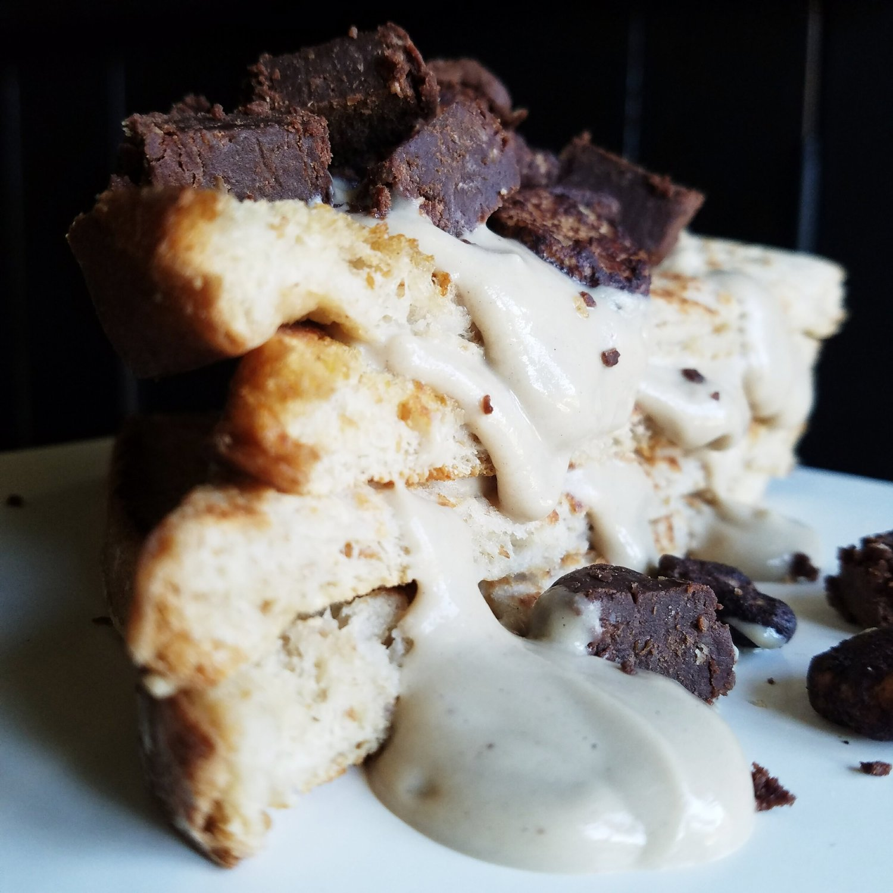

Vegan Cookies and Cream French Toast (gluten free)

Vegan cookies and cream french toast? Say no more! Get ready for some thick, soft french toast with a sweet cookies n' cream icing and rich chocolate bites. This recipe is absolutely vegan (no eggs!), sugar free, and can be made gluten free as well.
This recipe is a twist on my original best vegan french toast recipe. Yes, that's still my go-to recipe. I wish I could explain the delightfulness of the texture. Honestly, if I wasn't vegan and had to choose between classic french toast (with eggs), or this version, I'd still choose this vegan version. The exterior is softly browned and sturdy, then the interior of each bread slice is so soft and sweet. I really love this recipe, and it uses minimal ingredients.
For the icing, I love to use pea protein mixed with soy yogurt. For this, I used Silk brand yogurt with cookies and cream pea protein - one of my favorite flavors!! You can make the icing as thick or runny as you want, just add more or less water while making it. At a certain point the icing will truly have peaks like a cake icing; it's great! For toppings, I used a strong duo of Pure Genius brownies (fudgy, rich, made from chickpeas!) and cocoa dusted broad bean crisps (crunchy, sweet, light). Between the two, you have all the possible texture/flavor desires covered.
Try out this really basic vegan cookies and cream french toast recipe for yourself and let me know what you think! It is completely vegan, sugar free, and can be made gluten free by using gluten free bread.
Vegan Cookies and Cream French Toast
Serves: 1
French Toast Base
-
2 slices bread of choice
-
2 TBSP gluten free flour (I use King Arthur's)
-
1/4 cup unsweetened cashew milk (or almond)
-
1 stevia packet
-
1/2 tsp vanilla extract
Icing + Toppings
-
2 oz soy yogurt (1/4 cup)
-
1/2 scoop cookies and cream pea protein (15 g)
-
1 stevia packet
-
water
-
handful of cocoa dusted crisps
-
In a shallow bowl or container, slowly mix the milk together with the flour, whisking as you add the milk to prevent any clumps from forming. Then add the stevia and vanilla extract.
-
Set the bread slices in your shallow bowl or container, allowing the bread to soak up the flour mix. After soaking for 30-60 seconds, flip the bread slices to soak the other side.
-
Heat a pan over the stove top. Spray with nonstick spray, and place the two soaked bread slices in the pan. Let cook over a medium heat for 3-4 minutes, until lightly browned. Flip, and brown the other side for another 2-3 minutes.
-
Remove from the pan.
-
Prepare the icing by mixing the yogurt, pea protein, and stevia packet. Then slowly add water while mixing until you reach an icing type consistency that you like (approx. 1-2 TBSP). Pour on top of the French toast.
-
Chop up the brownie, and sprinkle the brownie and cocoa dusted crisps on top of the French toast. Enjoy!!